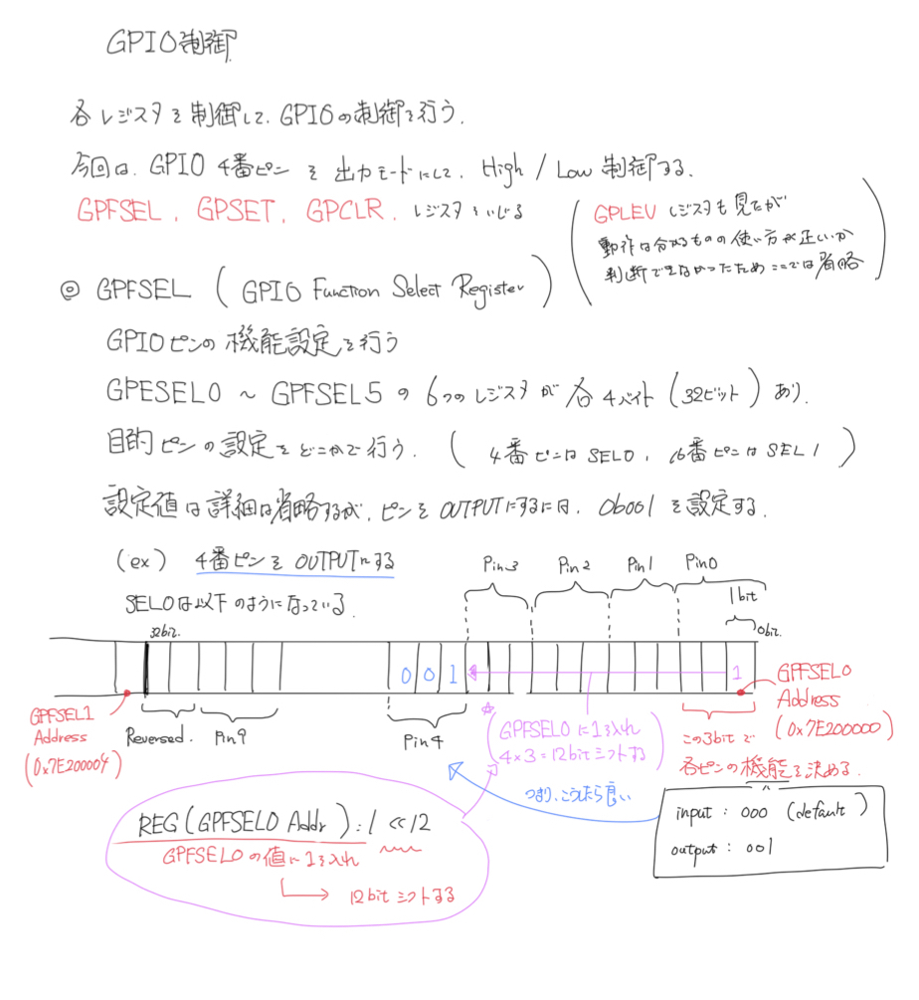

05. Raspi GPIO Device Driver¶
前回までで, デバドラの基本操作を行うシステムコールの実装方法を理解した. 今回はこれまでの内容を使って, ラズパイのGPIOデバドラを実装する.
しっかりとしてGPIOデバドラを作る目的ではないため, 簡単のために, 対象はGPIO4(4番ピン)のみで, 常にこのピンを出力モードとする. writeで, High/Lowをこのピンから出力する. 現在の出力レベルを”1”/”0”の文字列としてreadで確認できるようにする.
参考URL
前提知識¶
メモリ空間に関して(再)¶
警告
ここの話もしっかりと理解する. 今回行うような操作や手続きをリファレンスのみでできるようになると, ひとまず一人前だと思う.
前回説明を省略したが, 今回は必要なのでメモリのアドレス番号を取得する方法に関して記しておく. とはいえ, 以下の画像で理解できるはずである. (相変わらず解像度問題があるので, 必要に応じてiPadを確認する)
上記URLの筆者の環境ではラズパイ2で, CPUはBCM2835という番号であった. 私の手元にあるのは, ラズパイ3で, CPUはBCM2837であったがデータシートを確認したところ, おそらく2835と同じようであった. bcm_host_get_peripheral_address 関数で取得できる値も 3F000000 であったことと, cat /proc/cpuinfo | grep Hardware の値も 2835 とあったので, これは実質2835と考えていいだろう.
今回は簡単のために, ARM(CPU)からみたペリフェラルレジスタの物理アドレスは 3F000000 で固定とする. そして, データシートを見ると, ペリフェラルのアドレスは 7E000000 であるため, それぞれのオフセットを計算して, 3F000000 に加えたアドレスが, 操作すべきハードウェアレジスタの値である.
以下に, 今回使用するレジスタについて記述する.
| レジスタ名 | データシート上のアドレス | オフセット | 物理アドレス | 何をするつもりか |
|---|---|---|---|---|
| GPFSEL0 (GPIO Function Select 0) | 0x7E200000 | 0x00200000 | 0x3F200000 | 出力モード設定するのに使う |
| GPSET0 (GPIO Pin Output Set 0) | 0x7E20001C | 0x0020001C | 0x3F20001C | High出力する |
| GPCLR0 (GPIO Pin Output Char 0) | 0x7E200028 | 0x00200028 | 0x3F200028 | Low出力する |
| GPLEV0 (GPIO Pin Level 0) | 0x7E200034 | 0x00200034 | 0x3F200034 | 現在の出力レベルを取得する |
ユーザ空間プログラムで試しに実装する¶
これまで, カーネルモジュールを作ってきたが, レジスタアクセスだけならばユーザ空間からもできる. 今回はGPIO制御のレジスタを叩くだけなので, ひとまずユーザ空間上のプログラムで実装してみる. これでうまく動いたら, 後でカーネルモジュール側でデバイスドライバの実装に取り掛かる. 事前にユーザ空間で試すことで, デバッグがやりやすい利点がある.
ユーザ空間から行うために, ユーザ空間プログラムから物理アドレスに対してアクセスする必要がある. まず, /dev/mem をopenする. そしてそのファイルディスクリプタを使用して mmap する. この時, オフセットとして物理アドレスを指定する. サイズは使用する分だけでも良いが, ページ サイズ(4KByte)確保している例が多いようである. なお, openするときに O_SYNC を指定する. これによりキャッシュが無効になり, 即レジスタアクセスが行われる (そもそも, レジスタではキャッシュが使われない設定のはずだがねんのための処理)
言葉ではわかりにくいので下図を参照するといい.
ここで取り上げられているコードでは, それぞれ必要なオフセット値と, ペリフェラルレジスタの物理アドレスの開始位置などがdefineされており, オフセット等からアドレスを計算する場合にはシフト演算(<<)を利用している これに関しては, データシートをよく読まないとわからないだろう. 下の画像は今回のレジスタ操作の概要を示している.
上記の画像の内容が理解できれいれば, 上記URLのプログラム部で分からない部分はほぼ無いだろう. REG マクロはアドレスの値を与えるとそこに参照する部分まで実行する(図で示しているが一応補足) その値に対して‘1’をセットした後, 必要分ビットシフトすることで目的のレジスタ値をセットしている.
画像で説明はしているが, map, munmap の詳細は以下に記述しておく.
- mmap, munmap : mmap.h
動作¶
プログラムの解説が終わったところで動作させてみる. 今回はGPIO4番ピンをOUTPUTにして, High/Low の出力をさせるようにしている. ここで, Raspiの3.3V からLED, 抵抗を通して4番ピンを接続した状態で, プログラムを動作させると, 4番ピンが一度 High になった後, Lowになる(一度Highにする必要性は無いが今回は勉強のため) つまり, 3.3VからLED, 抵抗を通してLowになるのでLEDが発行する. ここで, プログラムの中の4番ピンをLowにするコードをコメントアウトして再度実行してみる. すると, 電源も出力もHighなのでLEDが発行しない.
さて, ここまでで基本的な流れは理解できたので, 次はプログラムを修正することなくLEDの発光を制御するもの, すなわち「デバイスドライバー」を作ってみる.
デバイスドライバをカーネルモジュールとして実装する¶
仕様¶
ついに本当のデバドラをつくる. 今回は簡単のために以下のような仕様にする.
- open
- GPIO4を出力設定にする.
- close
- なにもしない
- write
- “1” でHigh出力. “0”でLow出力
- read
- 現在の出力値を”0”か”1”で返す
また, 今回はユーザ空間ではなくカーネル空間で話を進めていくのでそのことも念頭に置く.
実装¶
カーネル空間では, 物理アドレスから(カーネル)仮想アドレス(非キャッシュ)への変換には inoremap_nocache を使用する. 上記ユーザ空間の場合ではある程度の領域を決め打ちで取得していたが, カーネル空間では全体で一つのアドレス空間しか持たないため, レジスタアクセスのたびに4Byteずつ変換して使うことにする. (本来どうするべきなのだろう...?)
アドレス変換が終わったら, あとは, ユーザ空間のプログラムと同じようにレジスタアクセスができる. なおユーザ空間とのデータのやり取りは, 以前 copy_to_user, copy_from_user を使用していたが, 今回は put_user, get_user を使用することにする.
ここで利用している, ioremap_nocache, iounmap に関しては少なくとも, 標準ライブラリにはなく, 冒頭で導入したラズパイ用カーネルヘッダの中のものである( linux/io.h, asm/io.h どちらを利用しても動作したが, 名前的に asm/io.h のほうが良いだろう(機能自体はあらかた同じだと思うので, 以下のindexには, linux/io.h として記述する). またこれまでのライブラリももしかしたらカーネルヘッダのライブラリを参照していたかもしれない(Makeを要確認)
下に少し図解を入れておく.
いい節目なのでコードを添付しておく. 上記URLとほぼ同じだが, 自分がわかるように多少のコメントを残している.
1 2 3 4 5 6 7 8 9 10 11 12 13 14 15 16 17 18 19 20 21 22 23 24 25 26 27 28 29 30 31 32 33 34 35 36 37 38 39 40 41 42 43 44 45 46 47 48 49 50 51 52 53 54 55 56 57 58 59 60 61 62 63 64 65 66 67 68 69 70 71 72 73 74 75 76 77 78 79 80 81 82 83 84 85 86 87 88 89 90 91 92 93 94 95 96 97 98 99 100 101 102 103 104 105 106 107 108 109 110 111 112 113 114 115 116 117 118 119 120 121 122 123 124 125 126 127 128 129 130 131 132 133 134 135 136 137 138 139 140 141 142 143 144 145 146 147 148 149 150 151 152 153 154 155 156 157 158 159 160 161 162 163 164 165 166 167 168 169 170 171 172 173 174 175 176 177 178 179 180 181 182 183 184 185 186 187 188 189 190 191 192 193 194 195 196 197 198 199 200 201 202 203 204 205 206 207 208 209 210 211 212 213 214 215 216 217 218 219 | #include <linux/module.h>
#include <linux/fs.h>
#include <linux/cdev.h>
#include <linux/device.h>
#include <linux/uaccess.h>
#include <linux/slab.h>
#include <asm/io.h>
// raspi peripherals macro
#define REG_ADDR_BASE 0x3F000000
#define REG_ADDR_GPIO_BASE (REG_ADDR_BASE + 0x00200000)
#define REG_ADDR_GPIO_GPFSEL_0 0x0000
#define REG_ADDR_GPIO_OUTPUT_SET_0 0x001C
#define REG_ADDR_GPIO_OUTPUT_CLR_0 0x0028
#define REG_ADDR_GPIO_LEVEL_0 0x0034
#define REG(addr) (*((volatile unsigned int*) (addr)))
#define DUMP_REG(addr) printk("%08X\n", REG(addr))
// device information
MODULE_LICENSE("Dual BSD/GPL");
#define DRIVER_NAME "MyDevice"
static const unsigned int MINOR_BASE = 0;
static const unsigned int MINOR_NUM = 1;
static unsigned int mydevice_major; // major number of device driver
static struct cdev mydevice_cdev; // charactor device object
static struct class *mydevice_class = NULL; // device driver class object
// ##### device open/read/write/close handler ##### //
// implement the Raspi Peripheral address I/O access in these handlers
// open handler
static int mydevice_open(struct inode *inode, struct file *file)
{
printk("mydevice_open");
// ARM Physical Address -> Kernel Virtual address Mapping
// Peripheral (GPFSEL0) address mapping
int address = (int)ioremap_nocache(REG_ADDR_GPIO_BASE + REG_ADDR_GPIO_GPFSEL_0, 4);
// set GPIO4 is OUTPUT
REG(address) = 1 << 12;
// Unmap GPSEL0 map
iounmap((void*) address);
return 0;
}
// close handler
static int mydevice_close(struct inode *inode, struct file *file)
{
printk("mydevice_close");
return 0;
}
// read handler
static ssize_t mydevice_read(struct file *filp, char __user *buf, size_t count, loff_t *f_pos)
{
printk("mydevice_read");
// ARM Physical Address -> Kernel Virtual address Mapping
// Peripheral (GPFLEV0) address mapping
// (GPLEV0 is 32bit data -> get 4byte (32bit) from GPLEV0 start address)
int address = (int)ioremap_nocache(REG_ADDR_BASE + REG_ADDR_GPIO_LEVEL_0, 4);
// Get state of GPIO4 from GPLEV0 (0(Low)/1(High))
//
// (consider under 4 bit)
// GPIO4 is High -> (Register is) ...1000 : (...1000) & (...1000) = ...1000
// GPIO4 is Low -> (Register is) ...0000 : (...0000) & (...1000) = ...0000
//
// if the (REG(address) & (1 << 4)) is 0 -> val = 0
// if the (REG(address) & (1 << 4)) isn't 0 -> val = 1
//
// (ex)
// printf ("%d\n", (10 != 0)); // > 1
//
int val = (REG(address) & ( 1 << 4 )) != 0;
// return the state of GPIO to user as charactor
// put the data to user space buffer.
// this buffer is read by user.
//
// *** WARNING ***
// if you put your data of int value, you would use 'itoa' function.
// but, in kernel space, you can't use this function.
// Now you have to print the '0/1' of int value, you remember
// (char) '0' -> (int) 48
// (char) '1' -> (int) 49
// so, you add your int 0/1 data to '0', so
// 0 + '0' = 48
// 1 + '0' = 49
// so, you can print it to '0' or '1'.
put_user(val + '0', &buf[0]);
// Unmap GPLEV0 map
iounmap((void*)address);
return count;
}
// write handler
static ssize_t mydevice_write(struct file *filp, const char __user *buf, size_t count, loff_t *f_pos)
{
printk("mydevice_write");
int address;
char outValue;
// Get the GPIO4 output value from user space buffer
// this buffer is setted by user input.
get_user(outValue, &buf[0]);
// ARM Physical Address -> Kernel Virtual address Mapping
// Peripheral (GPFLEV0) address mapping
// User set output '1' -> set GPSET0 of GPIO4
// User set output '0' -> set GPCLR0 of GPIO4
// (GPSET0/GPCLR0 is 32bit data -> get 4 byte (32bit) from GPSET0/GPCLR0 start address)
if (outValue == '1') {
address = (int)ioremap_nocache(REG_ADDR_GPIO_BASE + REG_ADDR_GPIO_OUTPUT_SET_0, 4);
} else {
address = (int)ioremap_nocache(REG_ADDR_GPIO_BASE + REG_ADDR_GPIO_OUTPUT_CLR_0, 4);
}
// set GPSET0/GPCLR0
REG(address) = 1 << 4;
// Unmap GPSET0/GPCLR0 map
iounmap((void*)address);
return count;
}
// systemcall handler table
struct file_operations s_mydevice_fops = {
.open = mydevice_open,
.release = mydevice_close,
.read = mydevice_read,
.write = mydevice_write,
};
// ##### Kernel Module load / unload handlers ##### //
// insmod handler
static int mydevice_init(void)
{
printk ("mydevice_init\n");
int alloc_ret = 0;
int cdev_err = 0;
dev_t dev;
// *** Creating Device and Register Kernel ***
// 1. get major number (dinamically)
alloc_ret = alloc_chrdev_region(&dev, MINOR_BASE, MINOR_NUM, DRIVER_NAME);
if (alloc_ret != 0) {
printk(KERN_ERR "alloc_chrdev_region = %d\n", alloc_ret);
return -1;
}
// 2. fetch major number from dev object.
mydevice_major = MAJOR(dev);
dev = MKDEV(mydevice_major, MINOR_BASE);
// 3. initialize cdev structure and register systemcall handler to it
cdev_init(&mydevice_cdev, &s_mydevice_fops);
mydevice_cdev.owner = THIS_MODULE;
// 4. register cdev to kernel using 'cdev' and 'dev'
cdev_err = cdev_add(&mydevice_cdev, dev, MINOR_NUM);
if (cdev_err != 0) {
printk(KERN_ERR "cdev_add = %d\n", alloc_ret);
unregister_chrdev_region(dev, MINOR_NUM);
return -1;
}
// *** Automatically Creating /dev/mydevice* ***
// 1. register class of this device (create /sys/class/mydevice/)
mydevice_class = class_create(THIS_MODULE, "mydevice");
if (IS_ERR(mydevice_class)) {
printk(KERN_ERR "class_create\n");
cdev_del(&mydevice_cdev);
unregister_chrdev_region(dev, MINOR_NUM);
return -1;
}
// 2. create /sys/class/mydevice/mydevice* to create /dev/mydevice*
for (int minor = MINOR_BASE; minor < MINOR_BASE + MINOR_NUM; minor++) {
device_create(mydevice_class, NULL, MKDEV(mydevice_major, minor), NULL, "mydevice%d", minor);
}
return 0;
}
// rmmod handler
static void mydevice_exit(void)
{
printk ("mydevice_exit\n");
dev_t dev = MKDEV(mydevice_major, MINOR_BASE);
// 1. delete /sys/class/mydevice/mydevice*
for (int minor = MINOR_BASE; minor < MINOR_BASE + MINOR_NUM; minor++) {
device_destroy(mydevice_class, MKDEV(mydevice_major, minor));
}
// 2. delete /sys/class/mydevice/
class_destroy(mydevice_class);
// 3. delete device driver from kernel
cdev_del(&mydevice_cdev);
// 4. delete major number
unregister_chrdev_region(dev, MINOR_NUM);
}
// register handler
module_init(mydevice_init);
module_exit(mydevice_exit);
|
動作¶
以下のようにビルドしてカーネルに組み込む.
make
sudo insmod MyDeviceModule.ko
echo "0" > /dev/mymodule0
echo "1" > /dev/mymodule0
cat /dev/mymodule0
>> 1111111111111111^C
echo で ‘0’ または ‘1’ を書き込むことで, GPIO4の出力が変わり, LEDがチカチカする. また, catで読み込むことで出力レベルが表示される. (Ctrl-cで止める)
おまけ¶
以下のコマンドで, 物理メモリマップを確認できる. これをみると今までの議論と同じようになっていることがわかる.
sudo cat /proc/iomem
SDRAMは物理アドレスの0番地から配置されている. 00000000-3b3fffff となっている. 0x3b3fffff = 994050047 = 約1GByteなので, 実際とも合っていそう. また, ペリフェラルレジスタアドレスも0x3fXXXXXX に配置されている.